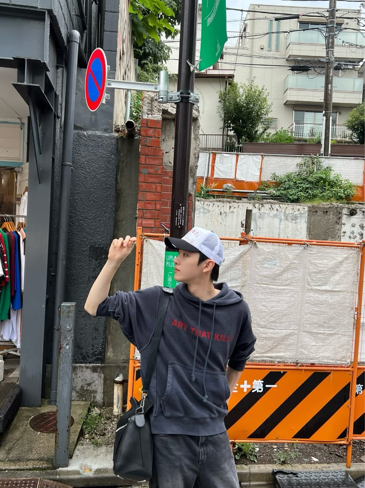

- Nama: JUNG SUNGCHAN
- Minat Bakat: Memasak terutama di bidang baking
- Hobi: Cooking, travelling, dan tidur
- Role Model: Lee Taeyong
Alasan, karena selain punya kepribadian yang baik, ia juga punya skill memasak yang mumpuni
- Motivasi: If u can dream it, u can do it